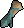
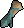

→
→

→
→

In this section i share my thoughts and conclusions with the region choices i intend to make.
Must have. The crystal armor is on par, if not outright crushing torva with that crystal blessing. Probably picking this.
Tob for megas. Region also offers noxious hally, aranea boots, and other interesting content. This one i like. If defensive stuff matters again, then justiciar is good too.
Thunder Khopesh looks crazy good! Thousand-Dragon Ward is BIS too. Otherwise fun content in the wildy. Downside is potential timeloss with getting attacked. Consider a barrage-ragging alt, maybe even with drygore bp. There is a good chance i pick this one.
Truthfully the Sunlight Spear looks a little weak, so not sure i am interested. Sunlit brace have some cool synergy with blood fury though. other content in region is fun though. Stonemason here too. On the fence, but leaning towards not picking this one.
BIS jewelry from here, i don't find myself particularily interested in the bosses though. stonemason is cool, but otherwise boring ass region. Probably not picking.
COX for megas.
TOA for fang and megas, otherwise just uninteresting. I also don't like TOA very much. Not choosing this.
Terrible region for content, hopefully piety is outclassed by a future reveal, and if so, not doing this region.
Dog-sword looks fun, but most region gear unlocks are not sufficiently strong to justify picking this.


 

.webp)